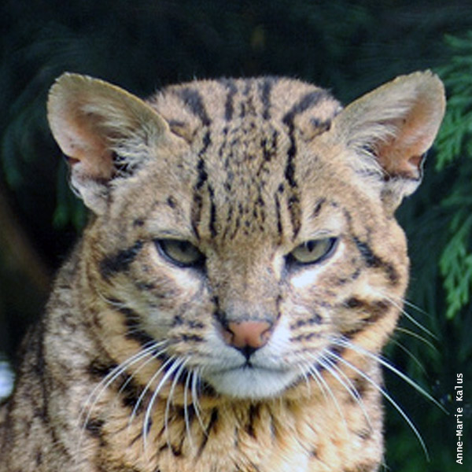

Gato Montes
- Nombre científico: Leopardus geoffroyi
- Mide entre 42 a 66 cm de largo
- Su peso de 2 a 6 kg.
El Gato Montés es de hábitos principalmente crepusculares y nocturnos. Si bien se adapta a ambientes muy diversos, prefiere sitios arbolados o rocosos y gusta mucho del agua. Es buen trepador y nadador y de día suele descansar oculto en árboles o grietas. Se alimenta de pequeños mamíferos, aves, reptiles, anfibios y peces. El área de acción de las hembras es de unos 3,5 km2, mientras que los machos tienen un territorio 3 veces mayor, que marcan con orina y excrementos. Las hembras del Gato Montés dan a luz generalmente en una cueva o en un hueco luego de una gestación de 74 a 76 días; suelen tener una camada anual de 1 a 4 crías, alcanzando la madurez sexual al año y medio o dos años.
Posee un cuerpo robusto de pelaje corto y áspero. Dorsalmente el fondo es de color bayo o leonado grisáceo, más pálido en los costados, volviéndose casi blanco alrededor de los ojos, el hocico y las partes inferiores. El dorso y los costados presentan pequeñas manchas negras redondeadas o elípticas, que se transforman en bandas transversales en los costados de las patas y en anillos en la cola.